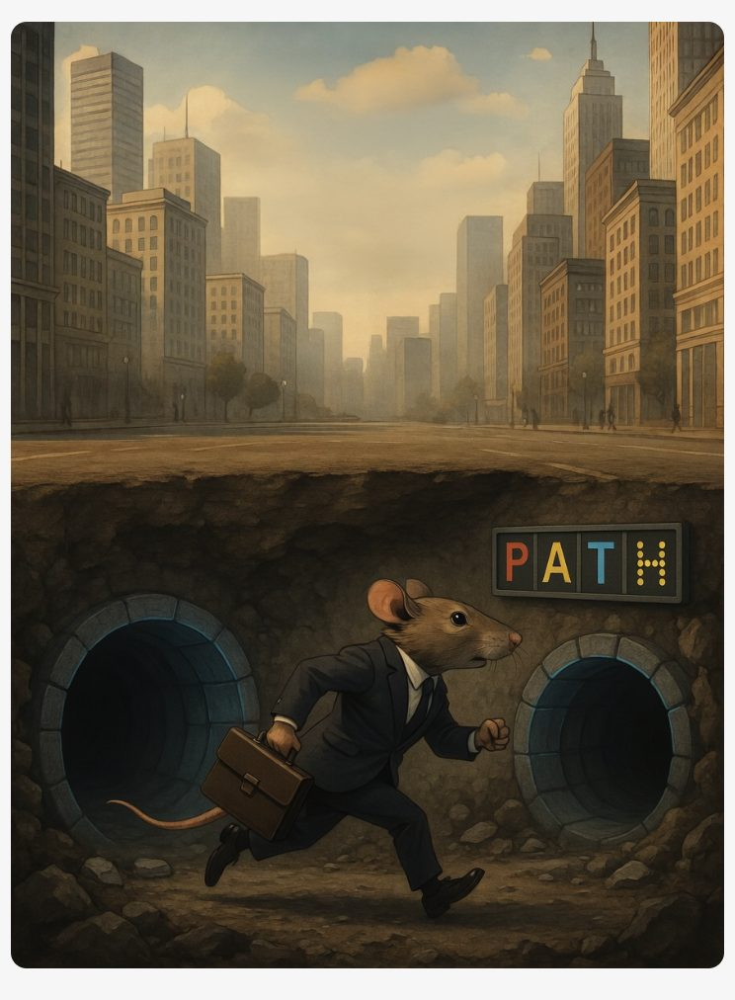
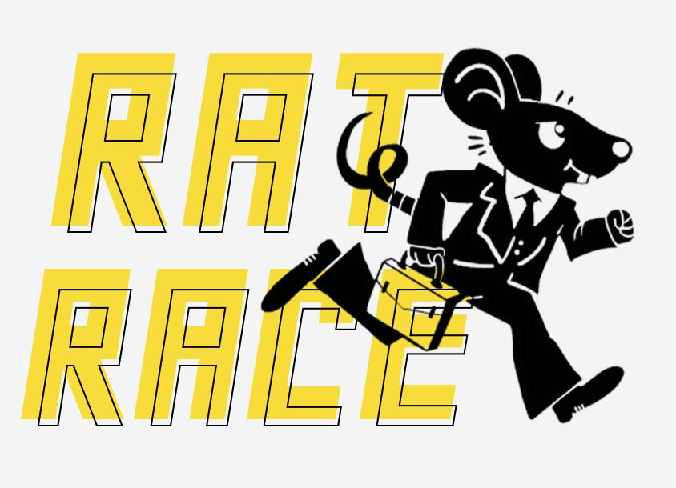
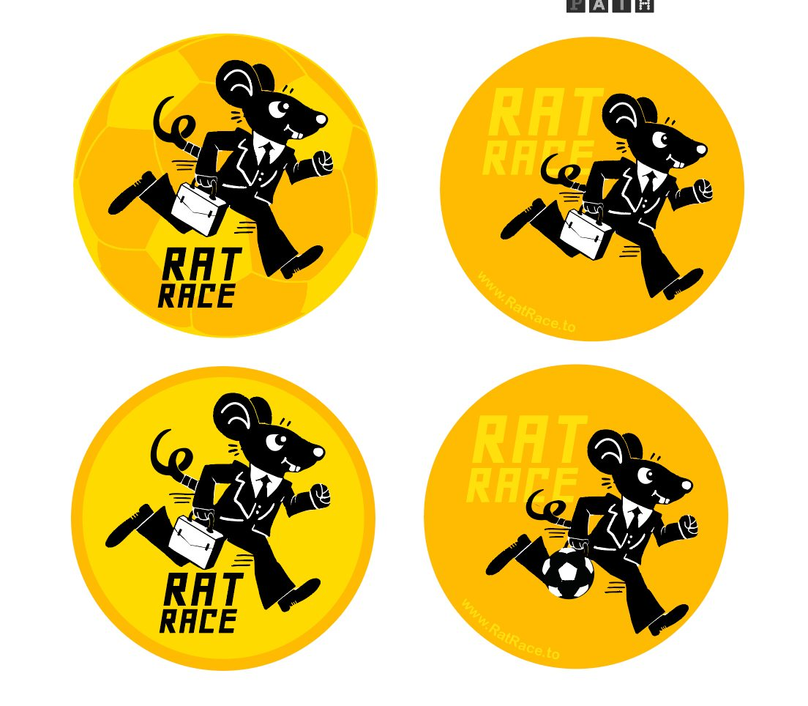
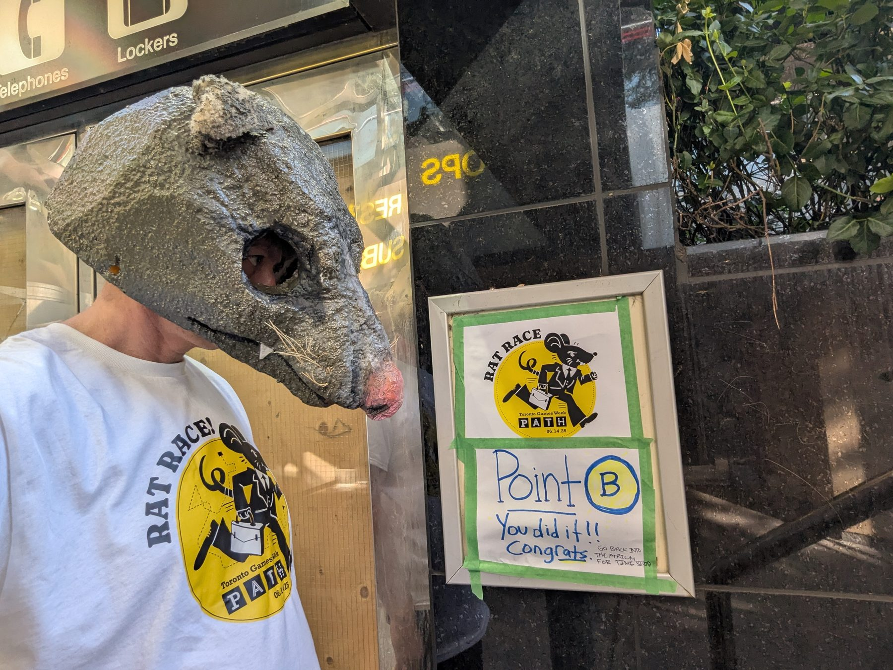

Overview
Rat Race is a live-action puzzle hunt I created and run through Toronto's PATH network — part scavenger hunt, part street-level theatre, all built to get strangers exploring the city together. I handle everything from brand identity and mission design to sponsor outreach and live event ops. This edition ran for Toronto Games Week, sending teams racing between hidden landmarks, riddles, and a giant rat mascot for bragging rights and the P.A.T.H. Champion title.



